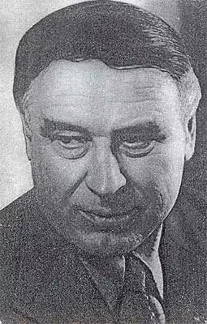

СЕРГІЙ ПЛАЧИНДА
Сергій Петрович Плачинда народився 18 червня 1928р. на Кіровоградщині (хутір Шевченко) в родині селянина.
Працював токарем у механічних майстернях радгоспу, пізніше — співробітником Кіровоградської районної газети, водночас учився в середній школі. В 1953р. закінчив філологічний факультет Київського державного університету, а потім аспірантуру при Інституті літератури ім. Т. Г. Шевченка АН УРСР, де й надалі працював науковим співробітником. З 1947р. співробітничав в республіканських газетах та журналах, друкуючи нариси й оповідання. В 1959 році вийшли в світ його книжка оповідань та на рисів "Кам'яна веселка" і повість "Таня Соломаха". Плачинді також належать літературно-критична праця "Композиція і характери в новелах Яновського" та книжка-нарис "Брати Місяця".